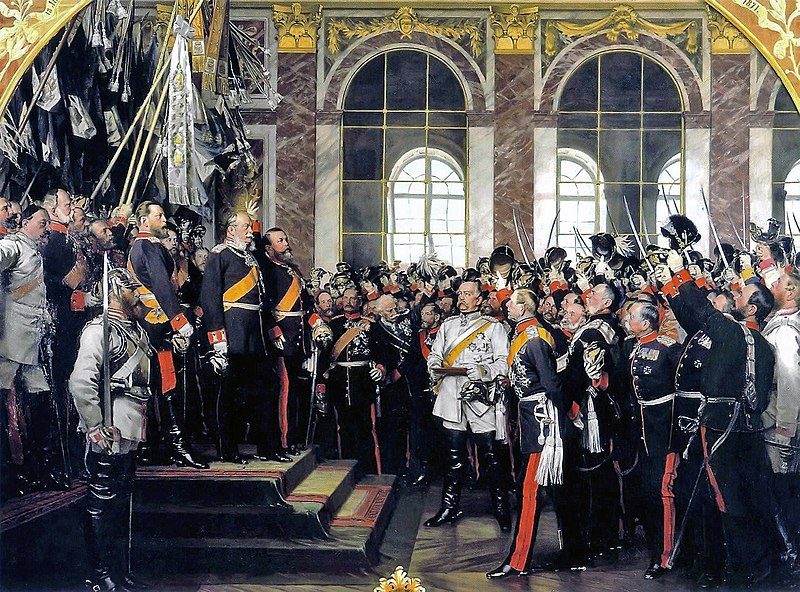

Внутреннее положение Пруссии в начале 1860-х годов
Главным, пожалуй, качеством, которое Фридрих Вильгельм IV унаследовал от своего отца,
была нерешительность. От деда же, Фридриха Вильгельма II, ему досталась склонность к мистицизму и романтизму [61]. В целом прусский король справедливо напрашивается на сравнения со
знаменитым королем Баварии Людвигом II. В годы правления Фридриха Вильгельма Пруссия
познала как внутренние, так и внешние унижения – подавление либеральной оппозиции и подписание Ольмюцского договора способствовали существенному ослаблению позиций Пруссии
в Германии.
Последствия такой политики могли привести к тому, что Гогенцоллерны опять, как и
в 1807 году, оказались бы «вышвырнуты» на периферию германской политики и обрели бы
положение заурядных местных князей. Одним словом, Пруссии, если та хотела сохранить статус значимой европейской державы, требовалась трансформация как внутренней, так и внешней политики.
Портрет Вильгельма I в его рабочем кабинете
2 января 1861 года на прусский престол вступил Вильгельм I – младший брат Фридриха
Вильгельма IV. На тот момент ему исполнилось уже 64 года – для XIX века возраст весьма солидный. Солдат-догматик, Вильгельм всем сердцем ненавидел Францию и Наполеона. 10-летним
ребенком он стал свидетелем краха прусского государства под ударами Великой армии, безвольной сдачи прусских крепостей перед саблями французской кавалерии. Позор 1807 года
навсегда остался в памяти юного принца, но уже вскоре он получил шанс для отмщения – Вильгельм, в чине лейтенанта, сражался в битве при Бар-сюр-Обе и участвовал во взятии Парижа
31 марта 1814 года.
Подобно русскому царю Николаю I, Вильгельм изначально не готовился к управлению
страной – вместо этого он целиком и полностью посвятил себя военной карьере, дослужившись до звания генерал-полковника. Как и все прусские офицеры, он до некоторого времени
не сильно вникал в политические вопросы, сосредотачивая свое внимание на службе. Лишь
болезнь старшего брата Фридриха Вильгельма IV, лишившая того дееспособности, заставила
Вильгельма принять на себя обязанности принца-регента и, тем самым, открыла ему дорогу
к власти.
Портрет кронпринца Фридриха
Впрочем, начало официального правления выдалось крайне тяжелым. В 1862-м попытки
короля убедить прусский ландтаг, в котором в то время доминировали либералы, в необходимости увеличения военного бюджета провалились. Ситуация усугублялась тем, что в семье
самого Вильгельма также намечался политический раскол – кронпринц Фридрих, женатый на
дочери британской королевы Виктории, придерживался либеральных взглядов и считал, что
Пруссия должна объединить Германию на демократической, а не военной основе. Несчастный Вильгельм, чувствовавший себя покинутым всеми, уже был готов подписать составленный
текст отречения от трона, но тут военный министр Пруссии генерал Альбрехт фон Роон убедил
короля обратить внимание на Отто фон Бисмарка, служившего послом во Франции и России.
Вильгельм оказался не готов нарушить принципы легитимизма и бросить вызов Венской
системе, поставив тем самым на карту будущее самой Пруссии. В отличие от националистов
из числа студентов и молодых офицеров, он не чувствовал своего грандиозного предназначения объединить Германию и считал себя исключительно прусским королем, не более. Сильная
армия ему была нужна только для обеспечения обороноспособности страны от возможного
вторжения Франции или Австрии.
Вильгельм I и Отто фон Бисмарк беседуют в берлинском Тиргартене
Пожилой король был живым воплощением консерватизма Гогенцоллернов, "старой доброй Пруссии", однако ему требовался человек, способный разъяснить меняющуюся политическую обстановку и дать понять, что Пруссия больше не может сидеть сложа руки и наблюдать
за немецкими делами со стороны. Бисмарк убеждал Вильгельма, что объединение Германии
неизбежно и Пруссии, если та хочет сохраниться как великая держава, необходимо ее возглавить [62]. Притом, в отличии от либерального кронпринца Фридриха, Бисмарк, будучи твердым
консерватором, считал, что данный исторический вопрос может теперь быть разрешен лишь
«железом и кровью». Сие выражение он, кстати, позаимствовал из стихотворения поэта фон
Шенкендорфа, написавшего его в годы войны с Наполеоном.
Вильгельм I и Отто фон Бисмарк в рабочем кабинете короля
Бисмарк уговорил Вильгельма не отрекаться от трона в сей важнейший для истории
Пруссии момент. Он взывал к офицерской чести и чувству долга короля, призывал того до
конца защищать свою власть [63]:
«Ваше величество стоите перед необходимостью бороться, вы не можете капитулировать, вы должны воспротивиться насилию, хотя бы это и было сопряжено с опасностью
для жизни».
Затем князь, при поддержке Роона, продавил принятие военного бюджета, воспользовавшись правом министра-президента объявить о роспуске парламента. Конституционный кризис
продлился в итоге аж до 1866 года, когда под влиянием побед прусской армии над датчанами и
австрийцами ландтаг наконец-то одобрил все военные расходы правительства. Позднее Вильгельм честно признавался, что не понимает до конца все решения Бисмарка, но в то же время
не может без него обойтись. Как говорил прусский король своему премьеру:
«Я не могу, как
вы, имея всего две руки, разом подкидывать и ловить пять шаров»[64].
Если бы в тот момент прусская внешняя и внутренняя политика пошли по пути либерализма, то объединение Германии затянулось бы на многие десятилетия и вся история страны
пошла бы иным путем. Однако проявленная Вильгельмом и Бисмарком твердость в конфликте
с либералами, вкупе с победами прусской армии над Данией и Австрией, спасли Пруссию от
революции и позволили Гогенцоллернам сохранить власть.
Внешнеполитическая обстановка перед объединением Германии
К началу 1860-х годов, на фоне восстания в Польше, внешнеполитическая обстановка
для Пруссии стала существенно улучшаться. По Альвенслебенской конвенции, подписанной
русским канцлером А. М. Горчаковым и прусским генералом Альвенслебеном 8 февраля 1863
года, прусские войска получили возможность преследовать повстанцев на российской территории, а русские войска на территории Пруссии. В целом новый русский царь Александр II
крайне благожелательно относился к ней, как и к ее королю Вильгельму, который приходился
самому Александру дядей по материнской линии.
А. М. Горчаков - последний канцлер Российской империи. Определял внешнюю политику России в середине XIX века
Вместе с тем между тем же Горчаковым и Бисмарком параллельно шла, своего рода,
холодная война. Прусского премьера раздражало то, с каким подозрением российский канцлер относился к его словам и действиям. Огорченный Бисмарк не стеснялся обвинять Горчакова в том, что тот «стремился отдалить Россию от Германии» [65]. Российский канцлер сознавал, что объединение Германии вокруг Пруссии приведет к трансформации всей европейской
системы [66], а рост немецкого милитаризма может привести к неблагоприятным для самой России политическим последствиям. Как показал дальнейший ход истории, опасения Александра
Михайловича были не напрасны…
С другой стороны, Британия и Франция, которые могли бы вместе с Россией выступить
против объединительной политики Пруссии, испортили свои взаимные отношения из-за разногласий касаемо польского восстания [67]. Лондон был готов пойти до конца и даже объявить
войну России из-за ее отказа предоставить полякам автономию. Франция, в свою очередь,
предпочла не воевать с ней из-за Польши и предложила обсудить судьбу последней на конгрессе. А ради того, чтобы Россия была более сговорчивой, Наполеон III был даже готов отказаться от статей 11 и 13 Парижского мира, запрещавших той иметь флот на Черном море [68].
Франкфуртский съезд князей 1863 года - последняя попытка Франца Иосифа реформировать Германский союз мирным путем и сохранить лидерство Австрии в Германии
В октябре 1862 года во Франкфурте был создан Немецкий союз реформ, чьи проекты
преобразований в основном соответствовали интересам малых государств «третьей Германии». В то же время члены объединения настаивали на сохранении Австрии в составе Германского союза [69]. Его правительством должна была стать Директория, состоящая из представителей восьми крупнейших государств Германии. В то же время от идеи создания союзного суда
члены Союза реформ отказались как от «нецелесообразной» [70].
Франц Иосиф попытался продвинуть реализацию данных предложений на Франкфуртском съезде князей 7 августа 1863 года. Бисмарк категорически отговорил прусского короля
Вильгельма ехать туда, поскольку справедливо опасался того, что князья во главе с императором Австрии надавят на него и заставят отказаться от малогерманской политики Пруссии.
Как того и ожидал Бисмарк, немецкие государи отказались одобрить проекты реформ в обход
последней и заявили, что готовы и без помощи Австрии начать новые переговоры с Пруссией [71].
Война с Данией
Для подготовки прусского общественного мнения к объединению Германии Бисмарку
требовалась «маленькая победоносная» война. Подходящим соперником была Дания, с которой у Пруссии еще имелись неразрешенные противоречия по вопросу принадлежности Шлезвига и Гольштейна. Обе провинции уже почти 15 лет находились под датской юрисдикцией,
что категорически не устраивало немецких националистов.
Формальный повод для конфликта нашелся, когда вместо умершего короля Фредерика
VII его престол занял принц Кристиан. Наследование шло по женской линии, в то время как
германские герцогства Шлезвиг и Гольштейн признавали передачу власти только по мужской
линии. Чтобы обезопасить Шлезвиг, Дания в ноябре 1863 года провозгласила его по новой
конституции частью своей территории.
Это окончательно спровоцировало Германский союз на военное вмешательство весной
1864 года. Не желая повторить неудачный опыт 15-летней давности, на сей раз Бисмарк договорился о совместных военных действиях против Дании с Австрией. На то у него было две
причины: во-первых, прусский премьер рассчитывал рассеять подозрения европейских держав, в том числе и Австрии, в том, что Пруссия сама стремится захватить всю территорию
Шлезвига и Гольштейна. Во-вторых, он полагал, что Британия, Франция и Россия не решатся
выступить одновременно против Австрии и Пруссии и не станут развязывать из-за маленькой
Дании масштабную европейскую войну [72].
8-я датская бригада при Дюббёле 18 апреля 1864 года, картина Йергена Зонне
Датчане, движимые духом древних викингов, не собирались без боя отдавать то, что, как
они сами считали, принадлежит им по праву. Они предполагали задержать австро-прусские
войска возле Даневирке, после чего вести маневренную оборону у Фредерисии и Дюппеля.
Однако под давлением немцев они были вскоре вынуждены оставить эти крепости, что сделало Ютландию беззащитной перед австро-прусскими войсками. Опасаясь дипломатических
осложнений – ни Британия, ни Россия не были заинтересованы в полном падении Дании –
Бисмарк согласился на перемирие с 12 мая по 26 июня. В это время начальником штаба союзных сил стал будущий фельдмаршал Хельмут фон Мольтке.
К середине июля союзные войска заняли Ютландию, чем вынудили датчан капитулировать. В октябре был подписан Венский мир, определивший статус Шлезвига и Гольштейна как
австро-прусского кондоминиума. Для совместного управления им Пруссия и Австрия заключили Гаштейнскую конвенцию, которая не только не сняла вопросы касаемо статуса герцогств,
но и добавила новые проблемы и противоречия в австро-прусские отношения. Когда Франц
Иосиф выразил готовность обменять далекий Гольштейн на небольшую территорию на австрo-прусской границе, Бисмарк ответил категорическим отказом.
Прусские войска высаживаются на Альзен, картина Вильгельма Кампхаузена (1866)
Австрийский император сразу понял причину отказа и призвал государства Германского
союза к мобилизации против Пруссии. Это позволило князю представить Австрию агрессором и врагом германского единства и, тем самым, оправдать непопулярную среди прусского
общества войну. Де-факто развязанная Пруссией война была гражданской – в Германии она и
сегодня именуется не иначе как «Deutscher Krieg».
Вообще, как признавался сам Бисмарк, изначально ему стоило больших усилий убедить
Вильгельма не только в праве, но и в необходимости аннексии Шлезвига и Гольштейна. В то
время король находился под сильным влиянием своей супруги Августы, которая сочувствовала либералам и, мягко говоря, негативно относилась к самому Бисмарку [73]. Однако, по свидетельству прусского премьера, победа над Данией и заключение Гаштейнского договора способствовали «психологическому перелому» в настроении Вильгельма. Король еще не был готов
к прямой схватке с Австрией за лидерство в Германии, но уже «начал находить вкус в завоеваниях» [74].
Австро-прусская война
Прусский министр-президент полагал, что: «сохранить желательную для проведения
нашей политики связь с Россией легче, действуя против Австрии, нежели заодно с Австрией» [75]. В 1865 году он предпринял попытку добиться от Наполеона III гарантии нейтралитета Франции во время назревавшей войны между Австрией и Пруссией. Французский император недвусмысленно дал понять, что в обмен на нейтралитет рассчитывает заполучить Люксембург и
Бельгию. Наполеон полагал, что эти германские державы увязнут в долгой кровопролитной
войне. Это позволило бы тем временем французским войскам выйти к Рейну и, тем самым,
захватить важные промышленные районы Пруссии [76].
Карл Гюнтер. Портрет генерал-фельдмаршала Хельмута фон Мольтке
Бисмарку стало окончательно ясно: чтобы исключить вмешательство Франции в австро-прусский конфликт, прусская армия должна одержать быструю победу над Австрией и также
быстро перебросить войска к Рейну. Генерал фон Мольтке предложил довольно рискованный
план: сосредоточить основные силы возле Богемии, оставив у Рейна лишь войска прикрытия
– на серьезное сопротивление Ганновера и Баварии никто не рассчитывал. Чтобы как можно
быстрее закончить войну, Бисмарк стремился привлечь к войне с Австрией Италию, а также
не предлагать Габсбургам слишком тяжелые условия мира [77].
Бисмарк утверждал, что Пруссия могла гарантировать безопасность своих западных границ только при условии благожелательных отношений с Ганновером и Гессенским курфюршеством. В январе 1866 года Бисмарк и граф Платен договорились о браке ганноверской принцессы Фридерики с прусским принцем Альбрехтом. Однако пол влиянием Австрии уже в
марте-апреле Ганновер начал призыв резервистов якобы для проведения запланированных на
осень военных учений.
Наследник престола Кургессена Фридрих Вильгельм тянул время, рассчитывая в случае
победы Австрии заполучить прусские территории. После свидания 14 июня с Бисмарком он
на прощание сказал князю [78]:
«Мы с вами, вероятно, еще свидимся как-нибудь в этом мире, а 800 тысяч доброго
австрийского войска тоже еще скажут свое слово».
В отличие от войны с Данией, теперь Пруссия ставила на карту действительно все. В случае поражения она бы оказалась в полной международной изоляции и, возможно, повторила
бы катастрофу 1807 года. Несмотря на это, тот же фон Мольтке не сомневался в победе – благодаря расширению им же роли Генерального штаба в системе прусского военного управления
и армейской реформе Роона, обеспечившей эффективное проведение мобилизации, Пруссия
оказалась значительно лучше подготовлена к предстоящей войне, чем Австрия.
Рихард фон Оттенфельд. Австрийская армия в походном марше
Генералы Франца Иосифа не питали иллюзии насчет силы австрийской армии [79]. Последнюю раздирали национальные противоречия, солдаты были вооружены устаревшими дульнозарядными ружьями, Генеральный штаб не давал свободы инициативы военачальникам, а те,
в свою очередь, использовали такие же устаревшие со времен Наполеона тактические приемы.
На самом деле цифра в 800 тысяч подготовленных солдат, приводимая австрийскими
политиками, была несколько преувеличена. Против Пруссии, сосредоточившей у границы с
Богемией 254-тысячную группировку, австрийский генштаб сумел направить лишь 245 тысяч
человек. Стоит также упомянуть о том, что еще 100 тысяч солдат Австрии пришлось перебросить на юго-запад, к границе с Италией [80].
Итальянцы давно стремились присоединить Венецию, некогда бывшую центром одной
из сильнейших морских республик Европы, а с 1815 года пребывавшую в составе империи
Габсбургов. Бисмарк воспользовался ростом итальянского национального движения и политической мощи Сардинии и договорился с Виктором Эммануилом об открытии итальянскими
войсками второго фронта в Альпах. Эрцгерцог Альбрехт, под предлогом того, что «нельзя ставить престиж династии под удар», направился на итальянский фронт. В то же время Северную
армию возглавил генерал Людвиг фон Бенедек – ветеран войны с Сардинией, не имевший ни
малейшего представления о богемском театре военных действий.
Австрийские войска двигались в больших колоннах, скученно, что затрудняло свободу
маневра в бою. Прусская же армия маршировала рассредоточено, концентрируя свои силы
только непосредственно на самом участке боя [81]. Благо, что густая железнодорожная сеть позволяла теперь это делать гораздо быстрее. Кроме того, прусские солдаты использовали новые
казнозарядные ружья, которые продемонстрировали свою высокую эффективность в параллельно шедшей гражданской войне в США.
Рихард фон Оттенфельд. Австрийская армия в походном марше
Федеральная армия Германского союза насчитывала суммарно 150 тысяч солдат. Однако
реальной боевой ценности она почти не представляла, поскольку федеральные корпуса не
имели единой системы командования, а малые германские государства во главе с Баварией,
имевшей 65-тысячную армию, не особо спешили выступать на стороне Австрии. Они не были
уверены в ее победе и не желали нарушать конституцию союза, запрещавшую ее членам решать
свои разногласия при помощи военной силы. Лишь Саксония не побоялась направить свой
контингент в состав австрийской Северной армии Бенедека [82].
Король Вильгельм и кронпринц Фридрих пожимают друг другу руки после битвы при Кениггреце
Несмотря на поражение от ганноверской армии в битве при Лангезальце, быстрый разгром федеральных войск позволил Пруссии обезопасить с запада свои основные силы, сосредоточенные в Богемии. Исход всей войны фактически решился в одном сражении – битве при
Кенигграце. Мольтке зажал силы Бенедека в «клещи», после чего войска последнего, рисковавшие попасть в полное окружение, начали отходить к Вене. Австрийская столица, которая
еще имела тогда крепостные стены, стала готовиться к осаде.
Бисмарк признавался, что ему стоило огромных душевных усилий убедить короля прекратить войну. 23 июля, во время военного совета в Никольсбурге, прусский премьер стал
единственным, кто высказался за прекращение боевых действий и подписание мирного договора. Он утверждал, что Пруссия на данный момент достигла всех поставленных целей, а продолжение войны могло бы спровоцировать вмешательство Наполеона III и губительную для
Пруссии войну на несколько фронтов. Возмущенные генералы требовали у Бисмарка не отнимать у прусских солдат славу победителей и не лишать тех возможности пройти триумфальным
маршем по австрийской столице. Когда Вильгельм принял позицию большинства, Бисмарк
удалился к себе и, рыдая, написал прошение об отставке.
Отто фон Бисмарк в пикельхельме
На следующий день он отправился на доклад к Вильгельму. В приемной короля он застал
двух полковников с донесениями о распространении среди войск эпидемии холеры. Она могла
усугубиться в случае продолжения наступления прусской армии на Венгрию. Обратив внимание на данное обстоятельство, Бисмарк также развил мысль о том, что в случае продолжения
войны и распада империи Габсбургов на ее территории мог бы возникнуть, помимо независимой Венгрии, целый ряд славянских государств, чьи революционные настроения несли бы
угрозу уже самой Пруссии. Присоединение же земель германской Австрии, по мнению прусского премьера, повлекло бы за собой целый ряд стратегических неудобств, поскольку «Веной
нельзя было бы управлять из Берлина как его придатком».
Вильгельм в целом согласился с тезисами Бисмарка, но посчитал необходимым наказать
Австрию и малые немецкие княжества за их антипрусскую политику. Князь возразил, отметив,
что при вхождении последних в состав единого германского государства те мало или поздно
захотели бы, пусть и с посторонней помощью, вернуть те земли, что принадлежали им изначально. Такие союзники a priori не могли бы считаться надежными, все политическое устройство империи стало бы крайне неустойчивым. Как сказал сам Бисмарк:
«Не судейские обязанности должны мы выполнять, но делать германскую политику;
борьба и соперничество Австрии с нами заслуживает нисколько не большего наказания, чем
наша борьба с Австрией; наша задача заключается в том, чтобы создать или подготовить
германское национальное единство под главенством короля прусского».
Чувствуя, что Вильгельм по-прежнему непреклонен, премьер удалился в свою комнату.
По его собственным словам, «я был в таком настроении, что мне пришло на ум, не лучше ли
броситься из открытого окна четвертого этажа». Однако в этот момент в комнату вошел
кронпринц Фридрих. Будучи, как мы уже о том говорили, сторонником либералов и политическим противником Бисмарка, в этот тяжелый момент он тем не менее выразил тому свою
поддержку и пообещал убедить отца в необходимости окончания войны.
Через полчаса Фридрих вышел из приемной Вильгельма с бумагой, где тот согласился «принять столь постыдный мир» [83]. В итоге заключенный 23 августа 1866 года Пражский
мирный договор ликвидировал Германский союз – один из столпов Венской системы – и завершил период австро-прусского дуализма, длившийся без малого 165 лет.
Северогерманский союз
К концу 1866 года Пруссия наконец-то осуществила свои давние геополитические цели.
Страна «округлила» собственные земли, преодолев навязанную ей в 1815 году территориальную чересполосицу, установила сухопутное сообщение с промышленным Рейнландом и получила более удобные для собственной обороны границы. По настоянию короля Вильгельма [84],
территории Ганновера, Гессен-Касселя, Нассау, вольного города Франкфурта, а также тех
самых Шлезвига и Гольштейна были включены в состав самой Пруссии. Остальные государства Северной и Центральной Германии, в частности Саксония, Брауншвейг, Гамбург, Любек,
Бремен и Мекленбург-Шверин, вошли в состав учрежденного 1 января 1867 года Северогерманского союза. Кроме того, на жителей Франкфурта, бывшего 51 год столицей стеснявшего
Пруссию Германского союза, была наложена контрибуция в 25 миллионов гульденов [85].
Открытие рейхстага Северогерманского союза в феврале 1867 года
То, что не удалось сделать прусским политикам в 1849-м в Эрфурте, удалось почти что
20 лет спустя графу Бисмарку. Канцлер предоставил Пруссии всю исполнительную власть в
союзе, а федеральная армия перешла под прусское командование. Бавария, Гессен-Дармштадт,
Вюртемберг и Баден хоть и сохранили независимость, но заключили военные договоры с Северогерманским союзом и провели реформы своих армий в соответствии с прусским образцом.
При создании единого парламента и законодательства союза Бисмарк руководствовался убеждением, что прусская конституция «в своем основном принципе разумна». По собственному
признанию канцлера, он не считал абсолютизм подходящей для Германии формой правления
и в целом приветствовал идею разделения законодательной власти между королем и парламентом. Основной закон Пруссии 1850 года и без того подчеркивал центральную роль короля в
политической системе страны, так что декларируемое Бисмарком стремление к конституционализму открывало путь к примирению Вильгельма с, мягко говоря, сомневавшейся в нем
либеральной оппозицией [86].
После победы при Кенигграце прусские либералы пережили серьезный политический
раскол. Одна их часть выразила готовность поддержать объединительную политику Бисмарка,
другая же по-прежнему обращала внимание на авторитарный стиль правления «железного
канцлера» и была серьезно обеспокоена его скептическим отношением к конституции. Разделение постигло и консерваторов, поскольку их легитимистское крыло посчитало аннексию
Пруссией ряда княжеств и королевства Ганновер незаконным. В то же время национал-консерваторы, как и национал-либералы, поддержали объединительную политику Пруссии [87].
Карта Северогерманского союза в 1867-1871 гг.
В связи со всем этим возникает еще один любопытный вопрос: почему же Пруссия, которая одержала достаточно убедительную победу над Австрией, не перешла сразу же за Майн и
не захватила Баварию, Баден, Гессен-Дармштадт и Вюртемберг? Ведь Австро-Венгрия и Франция с 1868 года как раз стремились создать Южногерманский союз в роли альтернативы возглавляемого Пруссией Северогерманского союза, чем могли бы восстановить австро-прусский
дуализм [88].
Не стоит забывать, что как военная, так и политическая интеграция государств Южной
Германии заняла бы много времени и отняла бы силы, которые Бисмарк рассчитывал сосредоточить на создании федеральной конституции и органов власти Северогерманского союза.
Канцлер рассчитывал привлечь их на свою сторону именно политическим путем, то есть как
заключением военных и экономических договоров, так и созданием образа внешнего врага.
Однако Люксембургский кризис 1867 года, когда Наполеон, отчаявшись присоединить Бельгию, попытался приобрести соседний Люксембург у Нидерландов, вызвал широкий резонанс
в Пруссии, но не произвел в государствах Южной Германии почти никакой реакции.
Более того, на тот момент в южногерманских государствах существовала радикальная
антипрусская оппозиция. О. Клопп в своей статье «Кто истинный враг Германии» от 1868 года
писал:
«И когда нас открыто спрашивают: чего вы желаете? – мы также открыто отвечаем:
войны против государства Гогенцоллернов, войны против отвратительного принципа, который создал это государство и который продолжает оставаться его сущностью.
... Мы, немцы, не боимся объединить свои усилия с Францией против государства
Гогенцоллернов, поскольку именно это государство разъединило и разрушило наше немецкое
отечество, растоптало наше национальное чувство и нашу самобытность, чтобы взамен
навязать нам свою униформу. Мы видим в династии Гогенцоллернов и в принципах, посредством которых она сколачивала свое государство, противоположность истинной немецкой
сущности, противоположность мирному и свободному развитию, одним словом, династия
Гогенцоллернов является единственным и настоящим врагом Германии.»
Правда в то же самое время автор отмечал, что [89]:
«…мы не [поддержим] войну, которая имеет целью территориальные приобретения в немецких землях в пользу Франции».
Заседание рейхстага Северогерманского союза
В сложившейся ситуации Бисмарк по его собственному признанию, внешне ведя переговоры с северогерманскими государствами, на деле выяснял позиции и настроения иностранных держав. Канцлер сознавал как неустойчивое внутреннее положение самой Пруссии, так
и то, что в случае перехода прусской армии на южный берег Майна Франция не останется в
стороне и обязательно постарается нанести упреждающий удар. Как писал сам Бисмарк [90]:
«Я исходил из того, что единая Германия – лишь вопрос времени и что Северогерманский
союз только первый этап на пути к его разрешению, но что вместе с тем не следует слишком рано пытаться вводить в надлежащие рамки враждебное отношение Франции и, быть
может, России, стремление Австрии к реваншу за 1866 г. и прусско-династический партикуляризм короля.
Я не сомневался, что германо-французскую войну придется вести до того, как осуществится построение единой Германии. Отсрочить эту войну до того момента, когда
наша армия окрепнет в результате распространения прусского военного законодательства
не только на Ганновер, Гессен и Гольштейн, но и на южногерманские государства, как я тогда
уже мог рассчитывать на основании связей с ними – эта мысль владела мною в то время.
...Каждый год отсрочки войны увеличивал нашу армию более чем на 100 тысяч обученных
солдат.»
Франко-прусская война
Подготовка германского общественного мнения к войне с Францией заняла почти 3 года.
К тому времени она уже считалась лишь вопросом времени – Бисмарк стремился устранить
последнее препятствие на пути к объединению Германии, в то время как Франция желала
любой ценой его остановить и, в идеале, вернуть свои «естественные границы» по Рейну 1801
года.
Да, Наполеон только теперь начал понимать, что упустил усиление Пруссии. Мексиканская авантюра отняла у Франции много сил и ресурсов, да и сам режим Наполеона III
постепенно терял свой авторитет среди французов. Имперское правительство продолжало
проводить социальную политику и приняло новую, более либеральную конституцию. Однако
стареющему Наполеону дипломатические интриги давались теперь все тяжелее.
Франц Ксавер Винтехальтер. Портрет Наполеона III
Если Люксембургский кризис стал следствием недальновидности Наполеона, то кризис с
испанским престолонаследием был спровоцирован исключительно самой Пруссией. Она воспользовалась страхом французов вновь оказаться зажатыми с двух сторон державами, управляемыми одной германской династией – в XVI-XVII веках таковой были Габсбурги – и выдвинула кандидатуру принца Леопольда Гогенцоллерна на испанский трон. Париж повелся на сию
провокацию и потребовал от Пруссии не только прекратить поддержку притязаний Леопольда
(которых у него самого, строго говоря, и не было), но и в целом «больше никогда не покушаться
на достоинство Франции» [91].
Сия формулировка была в высшей степени оскорбительной и в каком-то смысле напрашивалась на аналогии с Ольмюцским договором с Австрией, ставшим для Пруссии в свое
время крайне унизительным. Вильгельм ответил Бенедетти, что не может принять этот, по
сути, французский ультиматум. Когда посол 13 июля 1870 года изложил королю на вокзале
Эмса новые требования Наполеона, тот дал ему понять, что готов продолжить обсуждение
данного вопроса в Берлине.
Депеша с беседой Бенедетти и Вильгельма легла на стол Бисмарка, который в это время
ужинал с генералами Рооном и Мольтке. Канцлер был расстроен тем, что престарелый король
всячески стремится разрешить конфликт миром, что ломало все его планы на то, чтобы спровоцировать Францию на войну. Тогда Бисмарку пришла в голову судьбоносная идея: он изменил текст депеши и теперь получалось, что Вильгельм совершенно отказывался от дальнейшего общения с Бенедетти.
Отто фон Бисмарк, Альбрехт фон Роон, Хельмут фон Мольтке - отцы-основатели Германской империи
Роон сказал: «Старый бог еще жив и не даст нам осрамиться». Восторженный Мольтке
заметил: «Так-то звучит совсем иначе; прежде она звучала сигналом к отступлению, теперь
– фанфарой, отвечающей на вызов». Канцлер же пояснил [92]:
«Если, во исполнение высочайшего повеления, я сейчас же сообщу этот текст, в котором ничего не изменено и не добавлено по сравнению с телеграммой, в газеты и телеграфно во
все наши миссии, то еще до полуночи он будет известен в Париже и не только своим содержанием, но и способом его распространения произведет там на галльского быка впечатление
красной тряпки.
Драться мы должны, если не хотим принять на себя роль побежденного без боя. Но
успех зависит во многом от тех впечатлений, какие вызовет у нас и у других происхождение войны; важно, чтобы мы были теми, на кого напали, и галльское высокомерие и обидчивость помогут нам в этом, если мы заявим со всей европейской гласностью, поскольку это
возможно, не прибегая к рупору рейхстага, что встречаем явные угрозы Франции безбоязненно».
Расчет канцлера оправдался на все сто процентов. Опубликованный в Париже текст
Эмской депеши произвел эффект взорвавшей бомбы и вызвал массовое возмущение. Генералы
во всю убеждали Наполеона в том, что армия полностью готова к войне [93], хотя после указа о
мобилизации выяснилось, что дело обстоит совершенно обратным образом. Мольтке [94] отмечал, что штаб Наполеона готовился к наступлению с целью отрезать войска Северогерманского
союза от южногерманских государств. Такой план требовал крайне быстрой мобилизации и
быстрого развертывания, однако французы были к ним совершенно не готовы.
Пьер-Жорж Жаннью. Битва при Марс-ла-Тур (1886)
Во-первых, на французских железных дорогах сразу же образовались заторы, из-за чего
пополнение и снабжение просто не успевали подходить. Во-вторых, войскам катастрофически
не хватало магазинов, госпиталей и административного персонала. В-третьих, французские
офицеры получили лишь карты Германии, а не собственной территории – вероятность того,
что Франции придется вести оборонительную войну, даже не рассматривалась. Одним словом,
военное министерство Франции проявило в вопросе организации армии преступную халатность [95].
С самого начала военных действий французская армия была вынуждена отступать под
напором германских войск. Мольтке, который теперь пользовался при составлении оперативных планов полной свободой действий, стремился прижать основные французские силы к границам нейтральной Бельгии и, тем самым, очистить для немецких войск путь на Париж. 1 сентября 1870 года французскую армию постигла Седанская катастрофа. Император Наполеон
попал в плен к прусским войскам, а на следующий день, когда это новость дошла до Парижа,
во Франции началась революция и к власти пришло правительство национальной обороны.
Россия заняла в том конфликте позицию благожелательного для Пруссии нейтралитета.
В Петербурге еще прекрасно помнили унижение 1856 года, когда России запретили иметь флот
на Черном море. Устранение режима Наполеона III, который, собственно, и навязал ей позорный Парижский мир, было на руку Петербургу. Когда же выяснилось, что император Австро-Венгрии Франц Иосиф намеревается вступить в войну на стороне Франции, Россия пригрозила тому войной. Вместе с тем последней было не выгодно чрезмерное ослабление Франции,
потому после битвы при Седане канцлер Горчаков и Александр стали просить Вильгельма как
можно быстрее заключить мир [96].
Конрад Фрейберг. Немцы проводят пленный гарнизон Меца
Если войны с Данией и Австрией воспринимались пруссаками как, в большей степени,
политические, то франко-прусская война с самого начала обрела для обеих сторон характер
народной, отечественной. К концу 1870 года к германским войскам, ведшим осаду Парижа,
подошли существенные резервы, но и французская армия продолжала расти за счет массового прихода добровольцев. Карательные акции германских войск возбудили среди французов ненависть к оккупантам. Они считали, что борются за свое право на свободу, демократию
и собственную цивилизацию против прусского абсолютизма и военщины. Немцы же, в свою
очередь, желали отомстить не только за позор Йены и Ауэрштедта, не только за пятилетнюю
оккупацию Пруссии французской армией, но и за унижения времен раздробленной Священной Римской империи, когда Франция благодаря слабости Германии доминировала в Западной Европе.
Франкфуртский мир. Провозглашение Германской империи
19 февраля 1871 года президентом Франции был избран Адольф Тьер, который изначально протестовал против поспешного вступления своей страны в войну. В начале марта германские войска вступили в Париж, а 10 мая во Франкфурте был подписано соглашение, подтвердившее условия Версальского прелиминарного мирного договора от 26 февраля. Согласно
последнему, Франция уступала провинции Эльзас и Лотарингия Германии (ст. 1), а также
выплачивала в течение следующих 4-х лет контрибуцию в 5 млрд франков (ст. 2). Кроме того,
в течение этого срока на территории Франции размещались германские оккупационные войска
с целью выполнения той условий договора (ст. 3) [97].
Парад германских войск в Париже 1 марта 1871 года
Справедливости ради стоит отметить, что Эльзас и Лотарингия издавна принадлежали
Германскому королевству и Священной Римской империи – таким образом, имела место быть
не их аннексия, а возвращение Германией. Вместе с тем потеря этих провинций стала для
французов символом национального позора, свидетельством слабости не только их армии, но
и монархической государственности в целом. После сентябрьской революции 1870 года Франция навсегда отказалась от монархии и взяла твердый курс на строительство демократии под
девизом Великой Французской революции «Свобода, равенство, братство».
Вильгельм, даже несмотря на 3 победные войны с Данией, Австрией и Францией, по-прежнему не чувствовал своей глубокой связи с германским национальным движением. Он все
также считал себя скорее пруссаком, чем немцем, и ставил свой наследственный титул короля
Пруссии выше конституционного титула императора. Вильгельм прямо заявил Бисмарку, что
согласен на принятие лишь титула «императора Германии» (Kaiser von Deutschland).

Антон фон Вернер. Провозглашение Германской империи в Версальском дворце 18 января 1871 года
Канцлеру пришлось долго и мучительно отговаривать Вильгельма, объясняя тому, что
южногерманские правители не потерпят такой формулировки. Единственно возможным вариантом было принятие титула «германского императора» (Deutscher Kaiser), который подчеркнул бы положение Вильгельма как «первого среди равных» германских монархов. Как пишет
Бисмарк, дело в конце концов дошло до того, что 18 января 1871 года на торжественной церемонии в Зеркальной галерее Версальского дворца великий герцог Баденский воздал хвалу не
«императору Германии», и даже не «германскому императору», а «кайзеру Вильгельму». Возмущенный Вильгельм после провозглашения прошел мимо Бисмарка и отказался даже пожать
тому руку [98].
Впрочем, сей конфуз никак не мог омрачить момент национального триумфа и, вместе
с тем, кульминации исторической миссии Пруссии. Фактически с того дня немцы взяли свою
судьбу в свои руки. Их страна наконец-то перестала быть буфером между великими державами,
а сама стала таковой. Германская империя теперь простиралась, как поется в одной известной
песне, «от Мааса до Мемеля, от Эчи (Адидже) до Бельта».
Да, немцам теперь предстояла большая работа по устройству своего государства, созданию единой армии и системы альянсов. Однако тогда, 18 января 1871-го, немцы испытывали
гордость за свою страну и счастье от того, что они наконец-то оказались в едином государстве.
Прусский король Вильгельм, Бисмарк, Роон и Мольтке стали национальными героями Германии и заслуженно обрели всенародную любовь.


_-_BNF_Gallica.jpg)


.jpg)